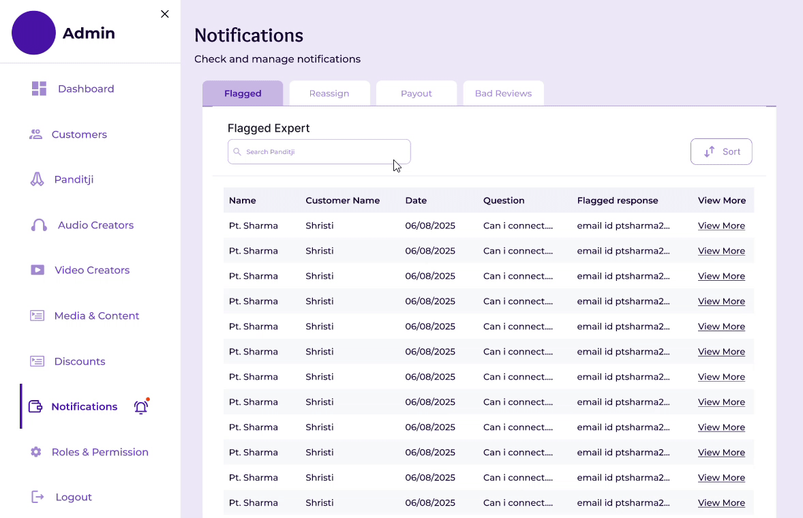
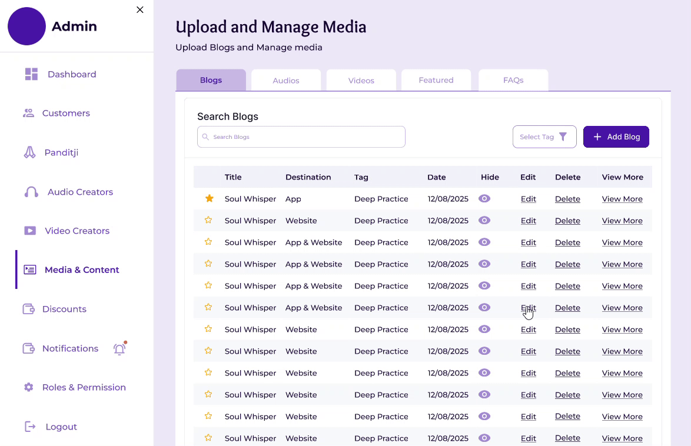
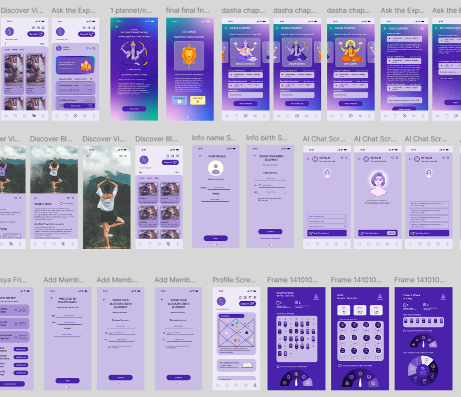
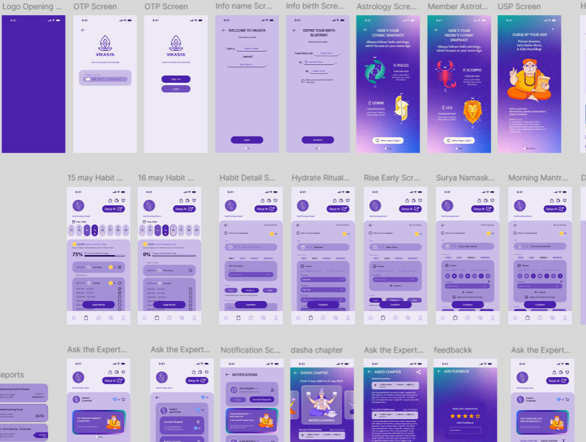
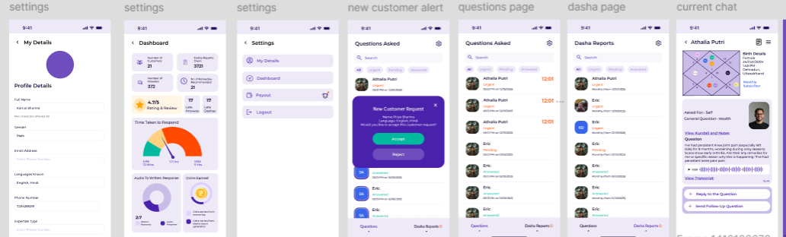
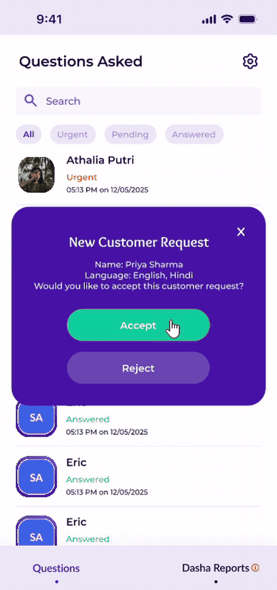

Sole founding designer for a SaaS faith-tech platform
Vikasya is a faith-tech platform where users get guidance from astrology and wellness experts and access audio, video and blog content. As the founding product designer, I designed the web app and mobile app, starting with the admin panel that runs the platform.
Most of the product work is under NDA. The case study shows selected workflows and product glimpses; get in touch for the rest.
How Vikasya works
Vikasya connects customer-facing experiences with the internal teams that keep the platform running. Each role works in a focused workspace, while the superadmin layer coordinates the operational work across experts, creators and customers.
Admin flows
The admin layer is where I started: the operational system behind experts, customers, content, moderation, promotions and payouts. The full set of admin flows is not shown because of NDA constraints. Below are selected glimpses.
Notifications

Flagged responses are checked for phone numbers, email IDs or other direct-contact details, then the question can be reassigned to another Panditji. The same workspace also surfaces new payout requests and bad reviews for operational follow-up.
Content publishing & featured content
The content layer lets the team manage what appears across the customer experience, including media that can be hidden, surfaced or featured on the home and media experience.

Mobile app
The customer-facing app brings together astrology and wellness guidance, daily insights, AI-led experiences, and a library of audio, video and blog content.


Expert app
The expert workspace supports the practitioners behind the customer experience, from incoming customer requests and questions to kundali details, previous notes, Dasha reports and active conversations.


An expert receives a new or reassigned customer request, looks into the question and kundali details, then goes deeper into earlier experts' notes and customer context before proceeding to answer or calculate the relevant predictions.
The screens here are a glimpse of a larger product system. Get in touch if you'd like to know more about the workflows, product decisions or my role in building Vikasya.
Get in touch ↗